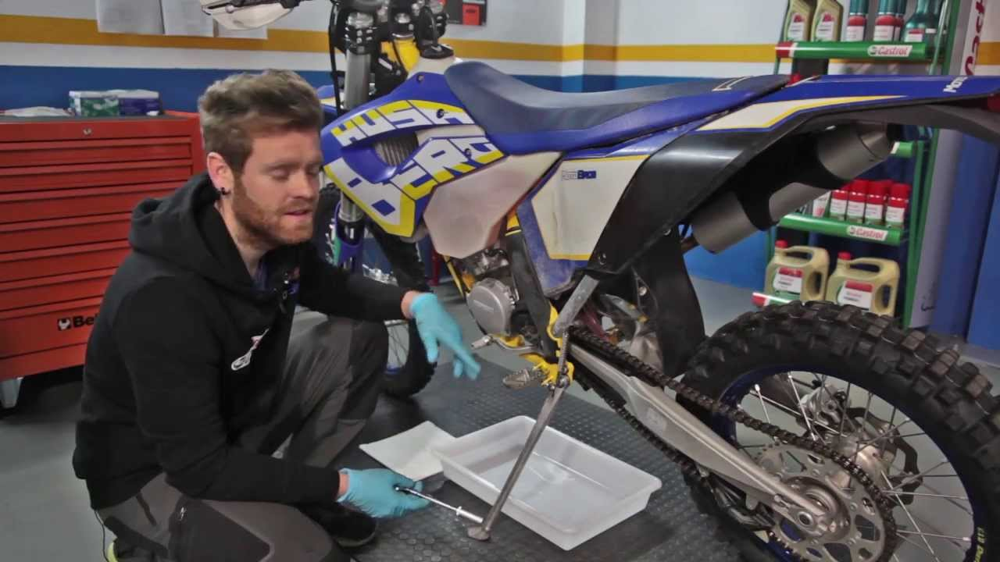

2 Common repairs
The clutch
Among the most vulnerable parts is the clutch, the mechanism that allows the gear shift shaft to be joined and separated so that the gears of the gearbox can work. Whether hydraulic, mechanical or automatic, the clutch is in continuous use and is very noticeable when they start to fail.
Chain
The chain is responsible for making the rear wheels move. It is another of the vulnerable parts of the motorcycle and one of the easiest to check, since it is usually in sight: seeing them or detecting that they are stretched or twisted is a sign that they require a replacement. To take care of its condition, you can check the fat and if necessary, add a little more on your own.